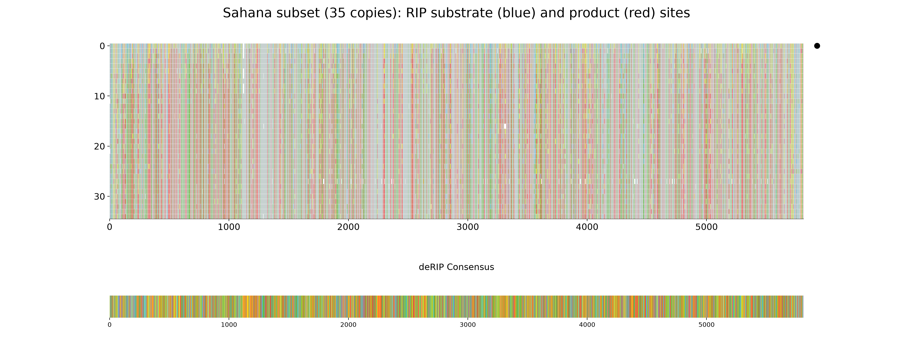
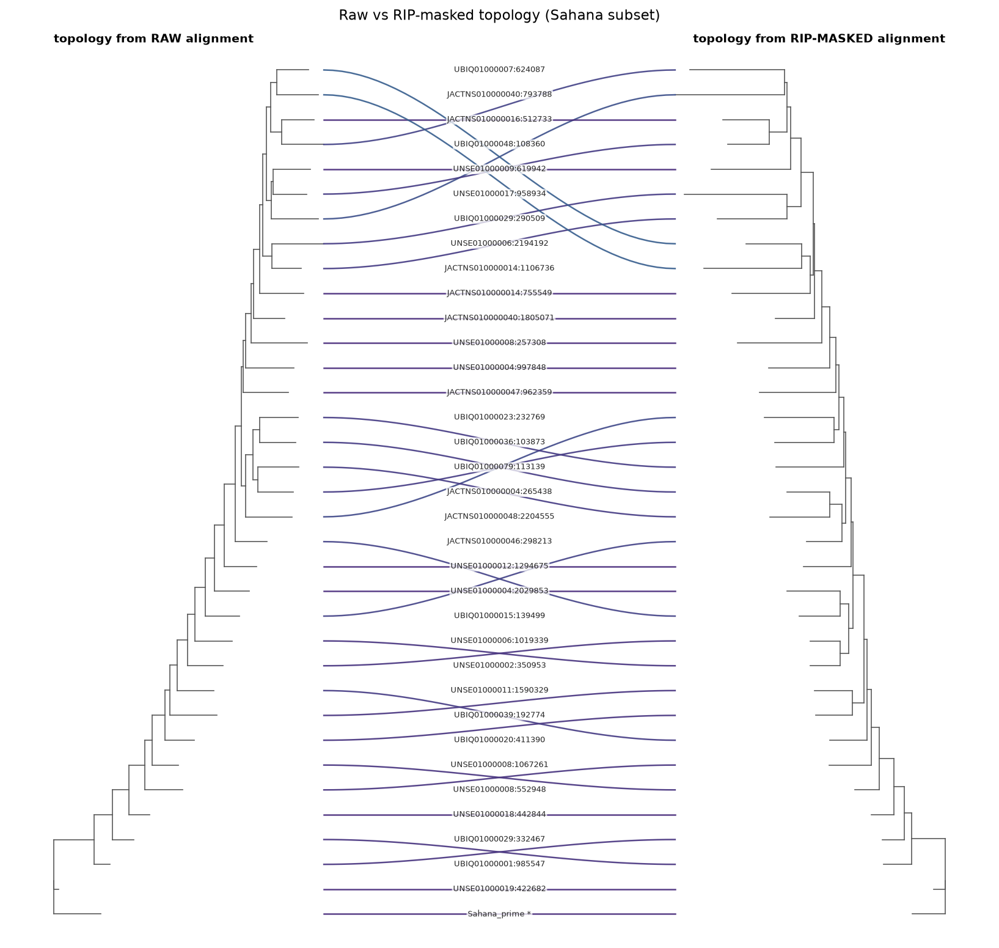

Masking RIP for phylogenetics
RIP is a phylogeneticist's nightmare. It strikes the same CpA dinucleotides
independently in copy after copy, so the resulting TpA products are convergent:
they look like shared, derived characters to a tree-builder even though they arose
separately. A tree inferred straight from a family of RIP'd repeats is therefore
pulled out of shape — copies group by how much RIP they have suffered rather than
by their true descent.
This page shows how to defuse that with deRIP2:
- Mask the RIP (and, optionally, all deamination) signal in the alignment.
- Build phylogenies from the raw and masked alignments and compare them with a tanglegram.
- Reconstruct on the RIP-free topology using the unmasked sequences, so branch lengths and ancestral states come from the real bases.
The biology of why RIP is strand-asymmetric and convergent is covered in the
RIP strand bias tutorial; here we take it as given and focus on
the phylogenetic workflow. We use a 35-copy subset of the Sahana DNA transposon from
Leptosphaeria maculans (tests/data/sahana.fasta.gz), keeping the low-RIP reference
copy Sahana_prime as an outgroup.
You need IQ-TREE
This tutorial calls IQ-TREE (iqtree3, iqtree2 or iqtree), which is not
pip-installable. Install it separately, e.g. conda install -c bioconda iqtree,
and make sure the binary is on your PATH. Everything else uses deRIP2's core
dependencies (ete4, matplotlib).
0. Build a working subset (optional)
You will normally start from your own curated family alignment. To reproduce the figures on this page, pull a 35-copy subset out of the bundled Sahana alignment that spans the RIP range — from the barely-touched reference to heavily-RIP'd copies — so masking has something to change:
from Bio.Align import MultipleSeqAlignment
from Bio import SeqIO
from derip2.derip import DeRIP
d = DeRIP('tests/data/sahana.fasta.gz')
d.calculate_cri_for_all()
cri = {c['id']: c['CRI'] for c in d.get_cri_values()}
# full-length copies only, then 34 evenly spaced across the CRI range + the reference
maxlen = max(len(str(r.seq).replace('-', '')) for r in d.alignment)
full = [r for r in d.alignment if len(str(r.seq).replace('-', '')) >= 0.9 * maxlen]
others = sorted((r for r in full if r.id != 'Sahana_prime'), key=lambda r: cri[r.id])
idx = sorted({round(i * (len(others) - 1) / 33) for i in range(34)})
prime = [r for r in full if r.id == 'Sahana_prime']
subset = MultipleSeqAlignment(prime + [others[i] for i in idx])
SeqIO.write(list(subset), 'sahana_subset.fasta', 'fasta')
1. Mask the RIP signal
deRIP2 masks corrected positions with degenerate IUPAC codes: a RIP product T
(and its unmutated C substrate) become Y (C/T), and the reverse-strand A/G
become R (A/G). This erases the identity of the deaminated base while preserving
that a base was there — exactly the columns that mislead tree search.
There are two masking depths:
| Mode | Masks | CLI | Python |
|---|---|---|---|
| RIP-like only (default) | Only deamination in RIP dinucleotide context (CpA↔TpA, TpG↔TpA) |
derip2 --mask |
DeRIP(..., reaminate=False) |
| All deamination | Every C→T / G→A transition, RIP-context or not |
derip2 --reaminate --mask |
DeRIP(..., reaminate=True) |
Use RIP-like masking when you specifically want RIP homoplasy gone but other variation
kept; use --reaminate when any cytosine deamination (including non-RIP methylation
damage) should be treated as noise for tree-building.
# RIP-like masking, no consensus row appended (we only want the masked copies)
derip2 -i sahana_subset.fasta --mask --no-append -d out -p sahana
# -> out/sahana_masked_alignment.fasta
The equivalent from Python, which also writes the masked FASTA:
from derip2.derip import DeRIP
d = DeRIP('sahana_subset.fasta', reaminate=False)
d.calculate_rip(label='sahana_deRIP')
d.write_alignment('sahana_masked.fasta', append_consensus=False, mask_rip=True)
--no-append matters for tree-building
By default derip2 appends its deRIP'd consensus as an extra row. For a phylogeny
you do not want that synthetic ancestor as a taxon, so pass --no-append (or
append_consensus=False).
2. See what was masked
Plot the alignment to see where RIP struck. Substrate bases are blue, products red —
these are precisely the sites rewritten to Y/R:
d.plot_alignment(
output_file='sahana_masking.png',
title='Sahana subset (35 copies): RIP substrate (blue) and product (red) sites',
width=20, height=8, show_chars=False, show_rip='both',
)

RIP is spread across the whole element, and every red column is a convergence trap for tree search. Masking neutralises them.
3. Build raw and masked phylogenies
Infer one tree from the raw alignment and one from the masked alignment. Root
both on the low-RIP reference Sahana_prime for correct polarity.
# Raw alignment
iqtree3 -s sahana_subset.fasta -m MFP -T AUTO -st DNA \
-o Sahana_prime --prefix raw
# Masked alignment
iqtree3 -s out/sahana_masked_alignment.fasta -m MFP -T AUTO -st DNA \
-o Sahana_prime --prefix masked
-st DNA is not optional on masked alignments
A heavily masked alignment is full of Y/R ambiguity codes. IQ-TREE's automatic
sequence-type detection can choke on it and abort with "Unknown sequence type".
Forcing -st DNA avoids this. (For large families add -fast to keep the search
quick; drop it and add -B 1000 for a publication tree with bootstrap support.)
The two runs even select different substitution models — here TIM2+F+R4 for the
raw alignment versus the simpler HKY+F+R3 for the masked one, because masking removes
a lot of the (artefactual) rate heterogeneity RIP injected.
4. Compare the topologies with a tanglegram
A tanglegram draws both trees facing each other and links equivalent tips. Where the
lines run straight across, the two topologies agree; where they cross, RIP homoplasy
had moved a copy. deRIP2 does not ship a tanglegram function, but ete4 (a core
dependency) plus matplotlib makes a compact one. Save this helper as tanglegram.py:
"""Draw a tanglegram comparing two phylogenies with ete4 + matplotlib.
Loads two Newick trees, ladderises each, lays them out facing one another, and
draws curved connector lines between equivalent tips. Connectors are coloured by
how far a tip moves between the two trees (its leaf-order rank change), so
entangled crossings -- clades reshaped by RIP homoplasy -- stand out.
"""
from __future__ import annotations
from ete4 import Tree
import matplotlib.pyplot as plt
import numpy as np
def _load(path):
with open(path) as fh:
return Tree(fh.read())
def _ladderise_layout(tree):
"""Return {leaf_name: y} and node (x, y) coords; x = depth, y = leaf order."""
for node in tree.traverse():
node.children.sort(key=lambda c: len(list(c.leaves())))
leaves = list(tree.leaves())
yof = {leaf.name: i for i, leaf in enumerate(leaves)}
xy = {}
def place(node, depth):
if node.is_leaf:
y = yof[node.name]
else:
ys = [place(c, depth + (c.dist or 0.0)) for c in node.children]
y = sum(ys) / len(ys)
xy[node] = (depth, y)
return y
place(tree, 0.0)
return yof, xy
def _draw_scaled(ax, tree, xy, scale, offset, flip):
"""Draw branches with x normalised to a fixed display width."""
depth = max(x for x, _ in xy.values()) or 1.0
def dx(x):
f = (x / depth) * scale
return offset - f if flip else offset + f
for node in tree.traverse():
px = dx(xy[node][0])
_, y = xy[node]
for child in node.children:
cpx = dx(xy[child][0])
cy = xy[child][1]
ax.plot([px, px], [y, cy], color='0.35', lw=0.8)
ax.plot([px, cpx], [cy, cy], color='0.35', lw=0.8)
def draw_tanglegram(
tree1_path,
tree2_path,
outfile=None,
labelmap=None,
gap=1.3,
treew=1.0,
title=None,
dpi=150,
):
t1, t2 = _load(tree1_path), _load(tree2_path)
y1, xy1 = _ladderise_layout(t1)
y2, xy2 = _ladderise_layout(t2)
n = max(len(y1), len(y2))
# Normalise both trees to the same display width: RIP-masking shortens the
# masked tree's branch lengths, so raw scale would collapse it.
left_tip = treew
right_tip = treew + gap
right_root = treew + gap + treew
fig, ax = plt.subplots(figsize=(11, max(4, n * 0.30)), dpi=dpi)
_draw_scaled(ax, t1, xy1, scale=treew, offset=0.0, flip=False)
_draw_scaled(ax, t2, xy2, scale=treew, offset=right_root, flip=True)
rankspan = max(1, n - 1)
cmap = plt.get_cmap('viridis')
for name, ya in y1.items():
if name not in y2:
continue
yb = y2[name]
col = cmap(0.12 + 0.83 * abs(ya - yb) / rankspan)
xs = np.linspace(left_tip, right_tip, 40)
t = (xs - left_tip) / (right_tip - left_tip)
ys = ya + (yb - ya) * (t * t * (3 - 2 * t)) # smoothstep
ax.plot(xs, ys, color=col, lw=1.2, alpha=0.9)
mid = (left_tip + right_tip) / 2
for name, ya in y1.items():
lab = labelmap.get(name, name) if labelmap else name
ax.text(
mid,
ya,
lab,
va='center',
ha='center',
fontsize=6,
color='0.15',
bbox={
'boxstyle': 'round,pad=0.15',
'fc': 'white',
'ec': 'none',
'alpha': 0.75,
},
)
ax.set_xlim(-0.05 * right_root, right_root * 1.05)
ax.set_ylim(-1, n + 0.5)
ax.axis('off')
ax.text(
0.0,
n,
'topology from RAW alignment',
fontsize=9,
fontweight='bold',
ha='left',
va='bottom',
)
ax.text(
right_root,
n,
'topology from RIP-MASKED alignment',
fontsize=9,
fontweight='bold',
ha='right',
va='bottom',
)
if title:
fig.suptitle(title, fontsize=11)
fig.tight_layout()
if outfile:
fig.savefig(outfile, dpi=dpi, bbox_inches='tight')
return fig
Then draw it:
from tanglegram import draw_tanglegram, _load
def short(name): # IQ-TREE rewrites ':' etc. to '_'
if name == 'Sahana_prime':
return 'Sahana_prime *'
scaffold, *rest = name.split('_')
coord = rest[0].split('-')[0] if rest else ''
return f'{scaffold.split(".")[0]}:{coord}' if coord else scaffold
labels = {leaf.name: short(leaf.name) for leaf in _load('raw.treefile').leaves()}
draw_tanglegram('raw.treefile', 'masked.treefile', 'sahana_tanglegram.png',
labelmap=labels, title='Raw vs RIP-masked topology (Sahana subset)')

Connectors are coloured by how far each tip moves between the two trees (dark = stayed put, bright = jumped), so the entangled crossings stand out. On this subset the two topologies are substantially different — a normalised Robinson–Foulds distance of 0.625 (40 of 64 possible splits differ):
from ete4 import Tree
raw = Tree(open('raw.treefile').read())
masked = Tree(open('masked.treefile').read())
cmp = raw.compare(masked, unrooted=True)
print(cmp['norm_rf']) # 0.625
That is the RIP artefact made visible: more than half the internal splits in the raw tree are not supported once the convergent RIP columns are removed.
5. Reconstruct on the RIP-free topology, from the real sequences
The masked tree has an honest topology but useless branch lengths and ancestral
states — its sequences are full of Y/R. The fix is to fix the masked topology
and re-estimate everything else from the unmasked alignment. IQ-TREE's -te option
holds the topology constant while recomputing the model, branch lengths and (with
-asr) ancestral states:
iqtree3 -s sahana_subset.fasta -te masked.treefile -m MFP -T AUTO -st DNA \
-o Sahana_prime --prefix fixedtopo
Now the tree shape reflects true descent (RIP could not distort it) while every branch length and reconstructed substitution comes from the real bases. This is the tree you want for downstream evolutionary analysis of the family.
This is also how you get honest mutation spectra
The same masked-topology-plus-unmasked-sequences trick powers deRIP2's rigorous
mutation-spectrum path. Instead of running iqtree -te by hand, hand the masked
tree straight to derip2-spectra:
derip2-spectra -i sahana_subset.fasta --method phylo \
--tree masked.treefile -d out -p sahana_spectrum
See Mutation spectra → Recommended: infer topology from a RIP-masked alignment for the full treatment, including why ancestral reconstruction must run on the unmasked sequences rather than the masked ones.
Summary
| Step | Command | Output |
|---|---|---|
| Mask RIP | derip2 --mask --no-append |
masked alignment (Y/R) |
| Raw tree | iqtree3 -s raw.fasta ... |
possibly RIP-distorted topology |
| Masked tree | iqtree3 -s masked.fasta -st DNA ... |
RIP-free topology |
| Compare | ete4 tanglegram + norm-RF |
how much RIP moved things |
| Final tree | iqtree3 -te masked.treefile -s raw.fasta |
honest topology, real branch lengths |
The masked and unmasked alignments share identical tips and columns — masking only rewrites bases in place — so the topology transfers exactly between them. Mask to find the shape; use the real sequences for everything else.